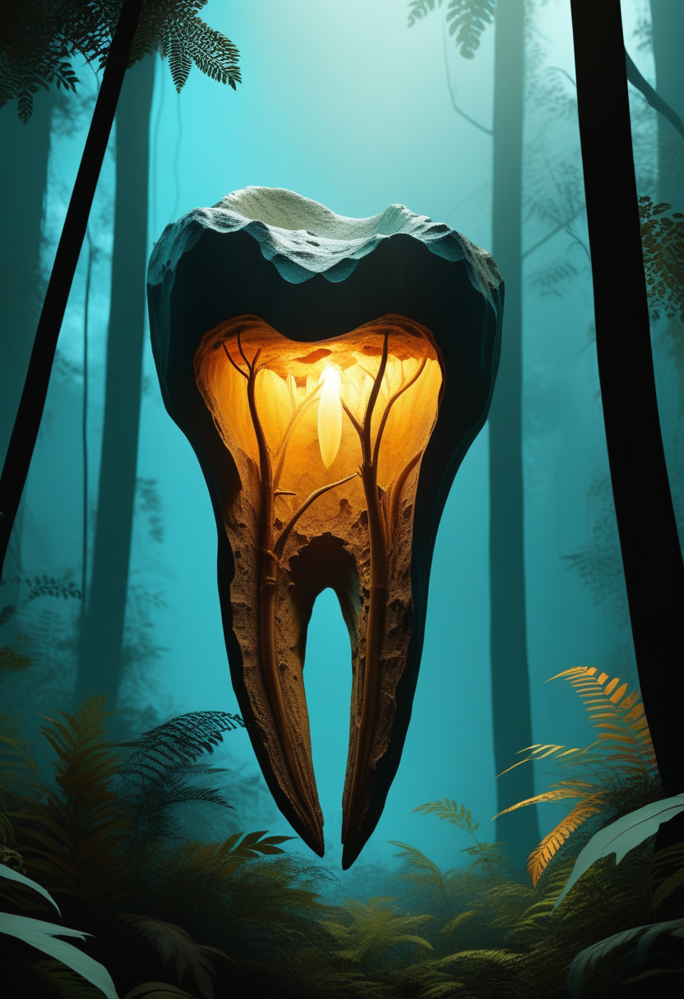
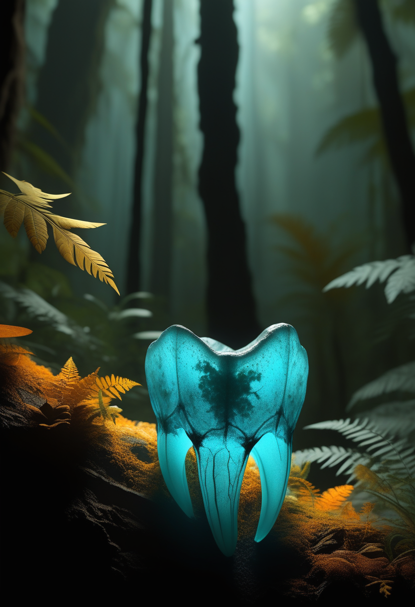
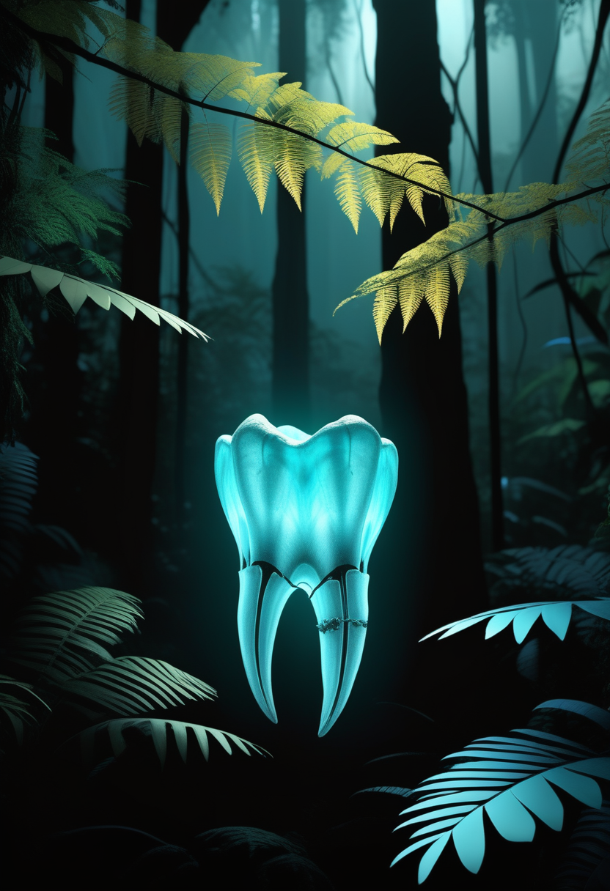
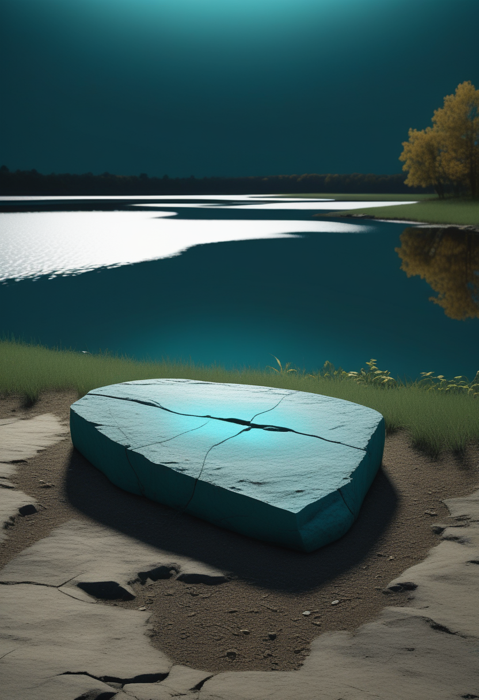

中国南部の洞窟から見つかった歯の化石が、ホモ・エレクトスが従来の想定より最大20万年も長く、しかも開けた草原ではなく密林の中で生きていたことを示した。足もとではエボラの確定例が1万1千人台後半に達し、BCIは柔らかい新素材と刷新システムという2つの技術的な歩みを見せ、パリ近郊とペルーでは埋もれていた墓が姿を見せた。

広西チワン族自治区のバーシェン洞窟・ナーシェン洞窟から見つかった9本の歯の化石を分析したところ、年代は約32万4千年前〜18万4千年前と判明した。これまで多くの研究者はホモ・エレクトスが大陸アジアでは約40万年前に姿を消したと考えていたため、この結果は生存期間を最大20万年ほど後ろへ押し出すことになる。歯と共存していた動物の歯のエナメル質を調べた化学分析では、開けた草原や疎林ではなく密な熱帯雨林に由来する成分が検出され、ホモ・エレクトスがジャワ島などで絶滅した一因とされてきた『密林の拡大』そのものを生活の場にしていた可能性を示した。9本のうち8本はホモ・エレクトスと確信度高く同定されたが、9本目はデニソワ人の可能性があり、2種が同じ地域で重なって生きていたのかどうかは今後の検討課題として残る。研究は2本の論文としてNature誌に11月18日前後に掲載された。
Cure SMAは11月5日、自らが運営する『コミュニティ・アップデート調査』(2020〜2024年収集)を分析した研究を学術誌Neurology and Therapyに発表したことを紹介した。SMN2遺伝子のコピー数が2個以下の子どもに限ると、生後3週未満で治療を始めた群は、生後4か月以降に治療を始めた群に比べて、より高次の運動マイルストーンに到達する確率が有意に高かった。単剤より複数の治療を併用した群の方が良好な結果に至りやすいことも示され、新生児スクリーニングの有無が所得による発達格差の大きさに関係していたという。査読論文としての正式な掲載タイミングは確認できていないが、学会発表段階のデータを裏づける内容として紹介されている。
SMAの治療地図は薬の種類だけでなく『いつ始めるか』という軸でも塗り替えられている。新生児スクリーニングの有無が、治療の選択肢そのものより発達の差を左右しうるという指摘は重い。
血管内インプラント『Stentrode』の第2世代治験を自主停止しているSynchronについて、11月19日前後の報道で新たな詳細が判明した。リード線単体の修理に留めず、システム全体を刷新する方針で、この刷新版の設計・製造はサンディエゴの開発チームが担う。会社は、すでにStentrodeを植え込まれている患者への支援を一生涯続けると明言している。再開時期は依然として未定で、安全性の問題ではなくFDAの指示でもないとする説明は変わっていない。
ケンブリッジ発の神経科学企業Axoftは11月19日、超柔軟な脳表プローブ『Fleuron』の臨床データを公表した。マサチューセッツ総合病院を含むMass General Brigham(MGB)とパナマクリニックで実施した人体・動物データから、プローブが安全でほとんど組織を傷めず、脳の動きに合わせて滑らかに追従すると説明している。パナマクリニックでの5例では急性植え込みにより覚醒・睡眠の判別や意識状態のリアルタイム解読の実証に成功したと報告(10月の神経集中治療学会で発表)。MGB・パナマクリニック合計7例では腫瘍・血腫の予定手術時に植え込み、チャンネルの最大85%で単一神経細胞レベルの信号を検出したという(10月末の脳神経外科学会で発表)。北米神経科学学会(11/14〜18)では、脈動による微小な動きの影響を受けにくいためデータの事後補正が要らないとする豚と人の比較結果も示された。いずれも企業発表の数値で、査読論文としての公表はまだない。
Synchronは足もとの停止を『作り直し』に転じ、既存の患者への約束を先に固めた。Axoftの柔らかいプローブは、脳が動いても信号が崩れないという、機械と組織の相性そのものに取り組んでいる。
米CDCの状況ページ(11月19日更新)によると、コンゴ民主共和国(DRC)のブンディブギョ型エボラは11月17日時点で確定11,613例・確定死者5,678人に達した。前号で報じた11月15日時点の11,432例・5,593人から、2日間で確定例が181例、死者が85人増えた。CDCは疑い例・疑い死亡は調査継続中として集計から除外しており、この数字は確定例のみを示す。拡大のペース自体は前号までに報じた『記録上最速』の水準から大きくは変わっていない。
確定例の増え方そのものはやや緩まりつつも止まっていない。数字の更新が静かに積み重なる週が続いている。
ESAが運用する火星探査機『エクソマーズ・トレース・ガス・オービター』が、アルバ山の斜面にできた新しい裂け目の上空で塩化水素ガスの急増を検出し、学術誌Science Advancesに発表された。このガスは通常火星の北半球の初夏には消えるはずだが、今回は季節外れに現れた。表面の高解像度カメラ(CaSSIS)の画像では、数百メートルに及ぶ新しい細い裂け目と、周囲の変色が確認されている。研究チームは、冬の氷がガスを閉じ込め、夏に氷が解けると地下のマグマ源から漏れたガスが一気に放出されるという仕組みを提案しているが、実際の噴火や新しい溶岩流は直接確認されておらず、火山活動以外の地下の化学反応である可能性も排除されていない。
火星の宇宙天気を調べるNASAの双子探査機『ブルー』と『ゴールド』(ESCAPADE)が、11月7日と9日にそれぞれ地球への接近を利用したスイングバイを完遂した。エンジン燃焼と地球の重力を組み合わせた『動力付きフライバイ』をNASAが使うのは初めてで、2日間で2回連続して『完璧に』実行できたとNASAは説明している。両機は2027年9月の火星到着を目指している。
NASAは11月17日、地球観測衛星『テラ』が12月1日付で科学データの収集を終えると発表した。1999年の打ち上げから27年にわたり、大気・陸地・氷・海洋を観測し続けてきた。搭載センサーMODISが集めた27年以上の観測記録は、今後もアーカイブとして利用可能な状態で残される。2023年時点の計画では科学運用の終了は2027年2月とされていたため、今回の発表は従来予定より前倒しになる。
火星では眠っているはずの火山が疑わしい兆候を見せ、地球を回る探査機は次の目的地へ正確に針路を取った。27年間地球を見つめ続けた衛星は、静かに役目を終える。

広西チワン族自治区のバーシェン・ナーシェン両洞窟で見つかった9本の歯の化石が、ホモ・エレクトスが大陸アジアで約40万年前に絶滅したという従来説より最大20万年遅くまで、しかも開けた草原ではなく密な熱帯雨林の中で生きていたことを示した。詳しくは本号の今日の一本を参照。

フランス国立予防考古学研究所(INRAP)は、パリ近郊シャンピニー・シュル・マルヌのマルヌ川沿いで、約6,500年前の新石器時代の墓地を発掘した。11基の墓・30個の巨石・重さ20,000ポンド(約9トン)を超える人型の石碑(メンヒル)、木柱の跡が見つかった。メンヒルは横倒しの状態で発見され、表面には彫られた跡や白・黒の顔料らしき痕跡が残る。約30平方メートルに及ぶドーム状の構造も確認されたが、用途は不明。1人の埋葬だけ様式が異なっていた理由も分かっていない。建設には、現地の砂・シルトと砂利・水を混ぜたセメント状の材料が使われたとみられる。
ペルー・パルパ谷ハウランガ遺跡の第25号墓から、約1,600年前(中期ナスカ期、325〜440年ごろ)の幼児の遺骨が見つかり、Proceedings of the National Academy of Sciencesに発表された。頭骨には単眼の眼窩と頭部骨の異常があり、DNA分析で13番染色体が1本多い『13トリソミー』と判明、これが原因とみられる。同じ墓にはもう1人、骨格に異常のない女児も埋葬されていたが、2人に母系の血縁関係はなかった。この地域では壺を使った幼児の埋葬が珍しくなく、単眼症の幼児も特別に異なる埋葬の扱いはされていなかった。幼児がどれくらいの期間生きたか、2人がなぜ一緒に埋葬されたかは分かっていない。
中国の洞窟は人類の種としての生存期間そのものを書き換え、パリ近郊の倒れた石碑とペルーの幼児の墓は、名もなき個人の生と死を今に伝えている。
今号の軸は『思っていたより長く、思っていたより深く』だった。ホモ・エレクトスは絶滅したはずの時期を20万年も超えて熱帯雨林に生き、SMAの治療効果は生後3週という驚くほど早い時期の違いに左右されていた。エボラの確定例は静かに積み重なり続け、SynchronとAxoftはそれぞれ違う角度からBCIと身体の相性に向き合っている。火星では眠る火山が疑わしい兆候を見せ、27年間地球を見つめた衛星は役目を終えようとしている。パリ近郊の倒れた石碑とペルーの幼児の墓は、遠い時代の個人の物語を静かに差し出している。
おやすみなさい、また明日。